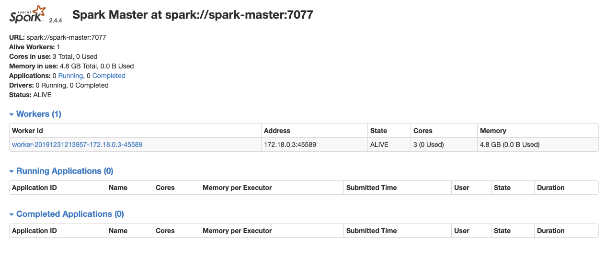

Deployment options¶
info
Updated 2/17/2023
Run locally with Docker¶
-
Build the image: The Dockerfile, in this repository, is using a OpenJdk base image and install Spark 3.3.1. The command to build the images:
docker build -t jbcodeforce/spark .(change the Spark version in the Dockerfile if there is a new release)
-
Start the container with docker compose. The docker compose file is in the root directory of this repository. It uses the two scripts (start-master.sh and start-worker.sh) to start the master or worker automatically. The environment variables to parameterize the WEB UI port, master node URL, and master port are set in the docker compose file. Start the cluster with 3 workers.
docker-compose up --scale spark-worker=3
spark-master | 19/12/31 22:48:22 INFO Master: Registering worker 172.19.0.4:39193 with 3 cores, 4.8 GB RAM
spark-master | 19/12/31 22:48:22 INFO Master: Registering worker 172.19.0.3:39161 with 3 cores, 4.8 GB RAM
spark-master | 19/12/31 22:48:22 INFO Master: Registering worker 172.19.0.5:43775 with 3 cores, 4.8 GB RAM
spark-worker_1 | 19/12/31 22:48:22 INFO Worker: Successfully registered with master spark://spark-master:7077
spark-worker_3 | 19/12/31 22:48:22 INFO Worker: Successfully registered with master spark://spark-master:7077
spark-worker_2 | 19/12/31 22:48:22 INFO Worker: Successfully registered with master spark://spark-master:7077
From there we should be able to run the different examples by starting another container on the same network:
docker run --rm -it --network spark-network -v $(pwd):/home jbcodeforce/spark bash
Start with docker without docker compose
docker run --rm -it --name spark-master --hostname spark-master -v $(pwd):/app \
-p 7077:7077 -p 8085:8085 --network spark_network jbcodeforce/spark bash
Start the Spark Master node. Within the container run:
/spark/spark-3.3.2-bin-hadoop3/bin/spark-class org.apache.spark.deploy.master.Master --ip spark-master --port 7077 --webui-port 8085
....
19/12/31 21:24:56 INFO Utils: Successfully started service 'MasterUI' on port 8085.
19/12/31 21:24:56 INFO MasterWebUI: Bound MasterWebUI to 0.0.0.0, and started at http://a63a4db062fb:8085
19/12/31 21:24:56 INFO Master: I have been elected leader! New state: ALIVE
docker run --rm -it --name spark-worker --hostname spark-worker \
--network spark_network jbcodeforce/spark bash
then within the bash shell:
/spark/spark-3.3.2-bin-hadoop3/bin/spark-class org.apache.spark.deploy.worker.Worker \
--webui-port 8085 spark://spark-master:7077
...
INFO Utils: Successfully started service 'sparkWorker' on port 45589.
19/12/31 21:39:58 INFO Worker: Starting Spark worker 172.18.0.3:45589 with 3 cores, 4.8 GB RAM
19/12/31 21:39:58 INFO Worker: Running Spark version 2.4.4
19/12/31 21:39:58 INFO Worker: Spark home: /spark
19/12/31 21:39:58 INFO Utils: Successfully started service 'WorkerUI' on port 8085.
19/12/31 21:39:58 INFO WorkerWebUI: Bound WorkerWebUI to 0.0.0.0, and started at http://spark-worker:8085
19/12/31 21:39:58 INFO Worker: Connecting to master spark-master:7077...
19/12/31 21:39:58 INFO TransportClientFactory: Successfully created connection to spark-master/172.18.0.2:7077 after 75 ms (0 ms spent in bootstraps)
19/12/31 21:39:59 INFO Worker: Successfully registered with master spark://spark-master:7077
-
Validate the installation, use the
spark-shellinside the docker container as:bash-4.4# cd /app bash-4.4# spark-shell Using Scala version 2.12.15 (OpenJDK 64-Bit Server VM, Java 17.0.6) Type in expressions to have them evaluated. Type :help for more information. scala> val rdd = sc.textFile("README.md") rdd: org.apache.spark.rdd.RDD[String] = README.md MapPartitionsRDD[1] at textFile at <console>:24 scala> rdd.count() -
Access the Spark console
Simply go to: http://localhost:8085/
On the Spark console we can see a new worker was added:

Note
The docker image includes one script to start the master and one to start the workers. The docker compose file below uses those commands to propose a simple spark cluster with one worker and one master. See below.
Smoke test the cluster¶
Start a 3nd container instance to run the spark-submit command to compute the value of Pi:
docker run --rm -it --name spark-client --hostname spark-client \
--network spark_network jbcodeforce/spark bash
/spark/spark-3.3.2-bin-hadoop3/bin/spark-submit --master spark://spark-master:7077 --class org.apache.spark.examples.SparkPi /spark/spark-3.3.2-bin-hadoop3/examples/jars/spark-examples_2.12-3.3.2.jar 1000
Spark and Delta Lake¶
The dockerfile named Dockerfile-deltalake build a Spark with Delta Lake extension so we can use the API to save and load data with transaction support, schema validation.
- Build the image
docker build -f Dockerfile-deltalake -t jbcodeforce/spark-delta .
- Run the image
docker run -p 4040:4040 -v $(pwd):/app jbcodeforce/spark-delta
- If you need to update the version see the delta-spark compatibility list
Installation on k8s or openshift cluster¶
The spark driver runs as pod. The driver creates executors, which are also running within Kubernetes pods, connects to them and then executes application code. The driver and executor pod scheduling is handled by Kubernetes.
See this spark openshift deployment study.
The spark product documentation or use a Spark operator. The basic steps are:
- Use a namespace like
jb-sparks. Modify the cluster and operator yaml files to use this namespace. -
Start the operator if it's not running
oc apply -f k8s-operators/operator.yaml -
Add cluster: edit the file
k8s-operators/cluster.yamlto configure your number of workersoc apply -f k8s-operators/cluster.yaml -
To verify the cluster runs do the following command on one of the worker pod to start a spark shell environment:
oc get pods # select one of the work pod oc exec -ti my-spark-cluster-w-5pcqw bash bash-4.2$ spark-shell